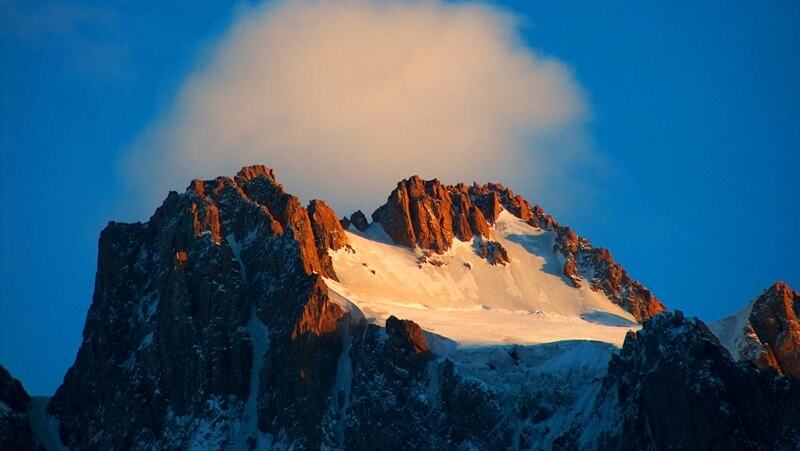

Приют Рацека
Ала-Арча. Высота: 3 370 м. Тёплая постель, горячая еда и тишина вершин за окном.
Ущелья, маршруты, приюты и вершины. Отмечайте восхождения и смотрите, кто забирается выше всех.
Отметить вершинуОт предгорий рядом с Бишкеком до ледников Тянь-Шаня: выберите ущелье и найдите свой маршрут.
Ала-Арча. Высота: 3 370 м. Тёплая постель, горячая еда и тишина вершин за окном.

Ала-Арча. Высота: до 4 870 м. Поднимитесь выше облаков, где вас ждут вершины.

Ала-Арча. Спокойный маршрут для семей и новичков среди хвойного леса и горной реки.
Добавьте её в свой список и поднимитесь в рейтинге.